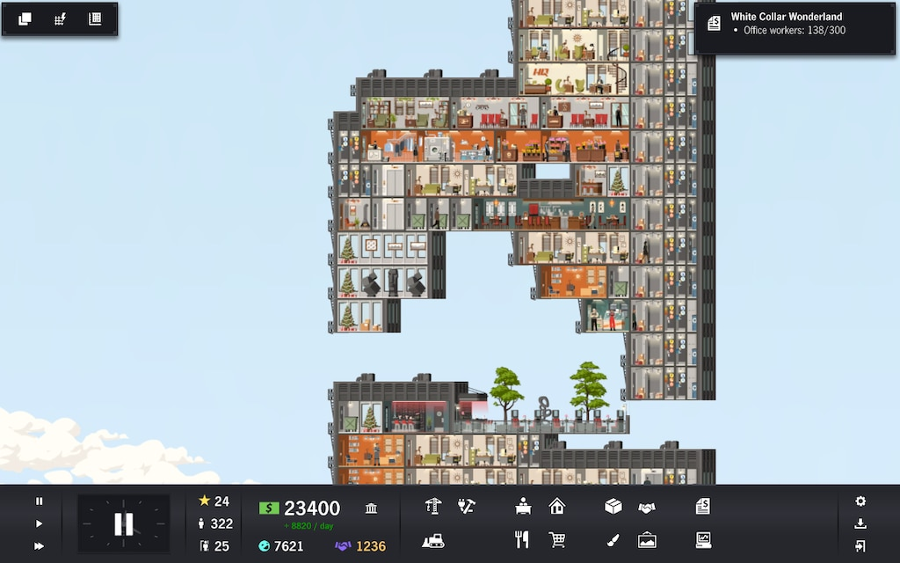
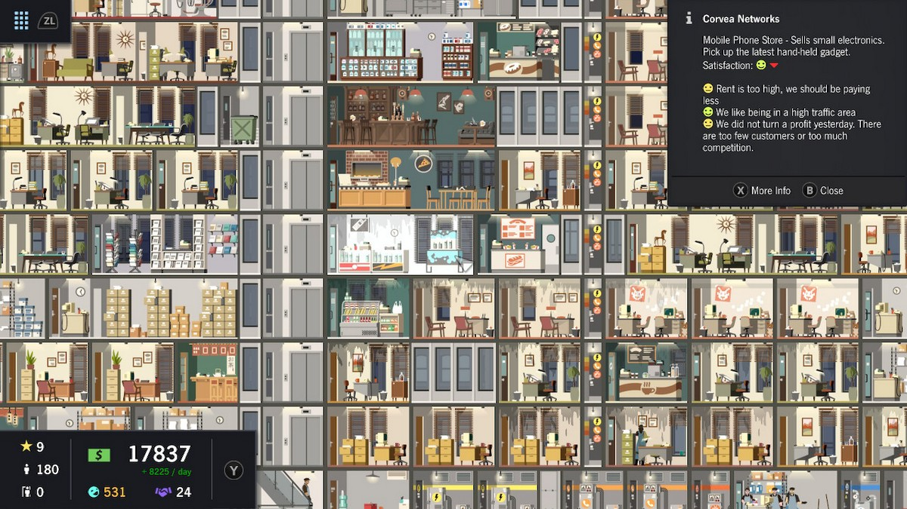

Tips for playing "Project Highrise"
Click the logo to download the game

You can manually save your game; there is an icon in the lower right of the screen.
Careful about your Prestige points. Some tenants are only happy if you have a certain level of prestige and your prestige drops if people move out, so you may quickly find yourself with a landslide of people leaving because your prestige is dropping (because people keep leaving which lowers your prestige, then makes people leave and lowers your prestige etc). The easiest way to alleviate this is to always have an art fund so you can throw down a bunch of paintings or statues to make up the difference.
You only need two transformers on each floor - the same one can be used for cable, phones and electricity and the other can be used for water and gas. You don't need a closet for each type.
Don't take contracts you don't think you'll finish soon, or you'll end up with this stupid objective that may take you forever to do while there is another waiting for you that you could actually finish. You'll discover toward the late game a lot of instant-win contracts because all they require is a certain population level, or whatever. They're a great way to make quick cash in a pinch.
Keep an eye on what the needs of your office folk are. Not all large size offices are the same; a financial office will need different amenities than a legal one. I have frequently found that my entire floor of offices are pissed because I didn't realize they all needed limo service or some shit I never realized was a thing at the time.
The beginning of the game will probably go very slow. You don't have much cash, your tower isn't that big, you're not making much money, and the fastest you can make time go is still pretty slow. Don't get carried away; the days are long and you will probably have need of that extra 500 bux you got, so don't go spending it at 2:00 AM and have nothing else to do for 22 hours of gametime. 22 hours in which your residents are pissed for some reason you can't fix because you're broke.
Oh, and renovate whenever possible. For some reason this tower is prone to some kind of nuclear waste catastrophe every other day. Tenants will quickly leave if their place is dirty, and in the first few days of your tower probably 80% of your income will go just toward this. It will be a problem in the beginning, but it doesn't scale too well so after a while it's a small expense.

These informations are from https://gameplay.tips/guides/12379-project-highrise.html
If you have any questions, contact me to ask.